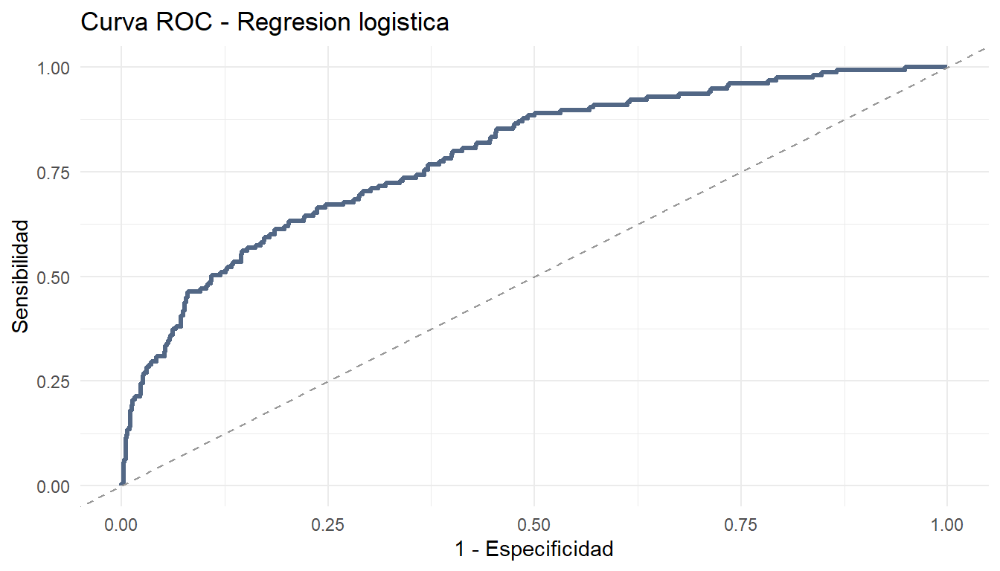
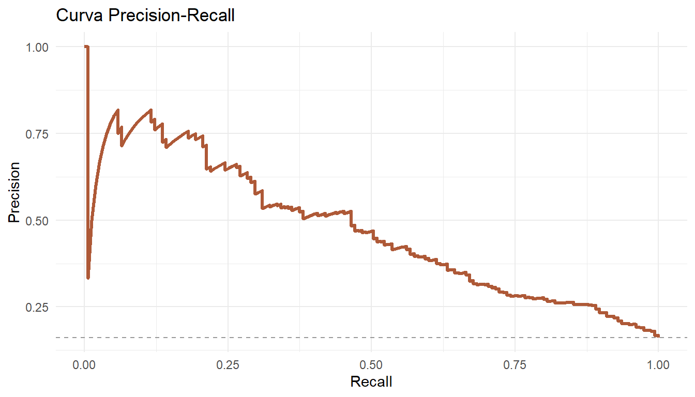

Capítulo 5 Metodología del modelado
5.1 Configuración y lectura de datos
La investigación utiliza dos respuestas: depressed es la variable binaria para clasificación y bdi_total es el puntaje para regresión. Ambas se estudian a partir de los mismos predictores, pero deben modelarse por separado, porque depressed está definido mediante el corte BDI-II de 14 puntos. Incorporar un objetivo como predictor del otro produciría fuga de información.
library(dplyr)
library(ggplot2)
library(tidyr)
library(knitr)
library(rsample)
library(yardstick)
library(glmnet)
library(recipes)
library(workflows)
library(parsnip)
library(tune)
set.seed(42)
ruta_datos <- "screen_time_mental_health.csv"
if (!file.exists(ruta_datos)) {
stop("No se encontró screen_time_mental_health.csv en el directorio del libro")
}
df <- read.csv(ruta_datos, stringsAsFactors = FALSE)
predictores <- c(
"sleep_quality_index", "avg_sleep_hours",
"midsleep_weekend_hours", "social_jetlag_hours",
"screen_time_index", "sex"
)
necesarias <- c("subject_id", predictores, "depressed", "bdi_total")
faltantes <- setdiff(necesarias, names(df))
if (length(faltantes) > 0) {
stop("Columnas ausentes: ", paste(faltantes, collapse = ", "))
}
df <- df[order(df$subject_id), ]
df$sex <- factor(as.character(df$sex), levels = c("Boy", "Girl"))
df$depressed <- as.integer(as.character(df$depressed))
stopifnot(all(df$depressed %in% c(0L, 1L)))
stopifnot(!anyNA(df[, necesarias]))
df %>%
summarise(
adolescentes = n(),
variables = ncol(df),
prevalencia_depresion = mean(depressed),
media_bdi = mean(bdi_total),
mediana_bdi = median(bdi_total)
) %>% kable(digits = 3)| adolescentes | variables | prevalencia_depresion | media_bdi | mediana_bdi |
|---|---|---|---|---|
| 4810 | 10 | 0.164 | 7.272 | 5 |
5.2 Predictores y exclusiones
Se utilizan los cuatro dominios del sueño, el índice de pantalla y el sexo. No se incluye subject_id, porque identifica personas; tampoco los objetivos depressed ni bdi_total, porque uno deriva del otro. Se excluye est_leisure_screen_hours por su redundancia con screen_time_index, que en el análisis de referencia tiene una correlación de Spearman cercana a 0,95. Se conserva el jet lag social, aunque está asociado con el cronotipo, para estudiar su aporte adicional.
X <- df[, predictores]
y_clasificacion <- df$depressed
y_regresion <- df$bdi_total
kable(data.frame(
predictor = predictores,
tipo = c(rep("Numérico", 5), "Categórico")
))| predictor | tipo |
|---|---|
| sleep_quality_index | Numérico |
| avg_sleep_hours | Numérico |
| midsleep_weekend_hours | Numérico |
| social_jetlag_hours | Numérico |
| screen_time_index | Numérico |
| sex | Categórico |
5.3 División de entrenamiento y prueba
La metodología reserva aproximadamente un 20 % para evaluación final. La estratificación se hace por la combinación sexo y estado depresivo, de forma que las cuatro combinaciones estén representadas. El mismo corte se reutiliza en clasificación y regresión. En R se emplea rsample::initial_split(); aun usando semilla 42, no debe asumirse que los índices coincidirán exactamente con los generados por scikit-learn.
df$estrato <- interaction(df$sex, df$depressed, drop = TRUE)
set.seed(42)
separacion <- rsample::initial_split(df, prop = 0.80, strata = estrato)
train <- rsample::training(separacion)
test <- rsample::testing(separacion)
# Conservar el mismo split para los demás capítulos del R Book.
dir.create("resultados/modelado_libro", recursive = TRUE, showWarnings = FALSE)
indices_split <- rbind(
data.frame(subject_id = train$subject_id, conjunto = "train"),
data.frame(subject_id = test$subject_id, conjunto = "test")
)
write.csv(indices_split,
"resultados/modelado_libro/split_indices_R.csv",
row.names = FALSE)
# Comprobar proporciones de cada grupo.
tablas_split <- bind_rows(
train %>% count(estrato) %>% mutate(conjunto = "train", porcentaje = n/sum(n)*100),
test %>% count(estrato) %>% mutate(conjunto = "test", porcentaje = n/sum(n)*100)
)
kable(tablas_split, digits = 2)| estrato | n | conjunto | porcentaje |
|---|---|---|---|
| Boy.0 | 1784 | train | 46.37 |
| Girl.0 | 1431 | train | 37.20 |
| Boy.1 | 169 | train | 4.39 |
| Girl.1 | 463 | train | 12.04 |
| Boy.0 | 452 | test | 46.94 |
| Girl.0 | 356 | test | 36.97 |
| Boy.1 | 41 | test | 4.26 |
| Girl.1 | 114 | test | 11.84 |
5.4 Preprocesamiento sin fuga de información
Para los métodos que usan escalas métricas, se estandarizan los cinco predictores numéricos y se codifica sex como indicador binario, tomando a los chicos como referencia. Los parámetros de estandarización deben aprenderse solo con el entrenamiento de cada fold. La forma más segura en R es integrar una receta (recipes) dentro de un workflow y utilizar ese workflow en la validación cruzada.
receta_clf <- recipes::recipe(
depressed ~ sleep_quality_index + avg_sleep_hours +
midsleep_weekend_hours + social_jetlag_hours +
screen_time_index + sex,
data = train
) %>%
recipes::step_dummy(sex, one_hot = FALSE) %>%
recipes::step_normalize(
recipes::all_numeric_predictors(),
-starts_with("sex_")
)
receta_reg <- recipes::recipe(
bdi_total ~ sleep_quality_index + avg_sleep_hours +
midsleep_weekend_hours + social_jetlag_hours +
screen_time_index + sex,
data = train
) %>%
recipes::step_dummy(sex, one_hot = FALSE) %>%
recipes::step_normalize(
recipes::all_numeric_predictors(),
-starts_with("sex_")
)
receta_reg## ## ── Recipe ──────────────────────────────────────────────────────────────────────## ## ── Inputs## Number of variables by role## outcome: 1
## predictor: 6## ## ── Operations## • Dummy variables from: sex## • Centering and scaling for: recipes::all_numeric_predictors(), ...5.5 Organización del análisis
Se distinguen tres etapas para clasificación: comparación del manejo del desbalance, comparación de los mejores algoritmos y selección de un umbral operativo. Para regresión: comparación de variantes de la respuesta, selección del modelo con RMSE y evaluación final. El conjunto de prueba no participa en la selección.
| Análisis | Etapa | Objetivo |
|---|---|---|
| Clasificación | 1 | Contrastar datos originales, pesos de clase y SMOTENC. |
| Clasificación | 2 | Comparar modelos mediante PR-AUC de validación cruzada. |
| Clasificación | 3 | Elegir el umbral con probabilidades fuera de fold del entrenamiento. |
| Regresión | 1 | Contrastar BDI original, raíz cuadrada, logaritmo y pérdidas de conteo. |
| Regresión | 2 | Comparar RMSE, MAE y R², aplicar una regla de parsimonia. |
| Ambos | Test | Evaluar una sola vez y cuantificar la incertidumbre. |
5.6 Clasificación: predicción de depressed
5.6.1 Métricas principales
Como la categoría deprimida es minoritaria, la métrica de selección es el área bajo la curva precisión–recobrado en su versión average precision (AP), que en este capítulo se denomina PR-AUC. Su línea base aproximada es la prevalencia de la categoría positiva. La ROC-AUC mide discriminación; precisión, recall, F1 y exactitud dependen de un umbral. La exactitud aislada puede ser engañosa cuando predomina la clase negativa.
# Ejemplo reproducible de referencia: regresión logística sin tuning.
# Se usa la respuesta numérica 0/1 para evitar invertir la clase positiva.
modelo_logistico <- stats::glm(
depressed ~ sleep_quality_index + avg_sleep_hours +
midsleep_weekend_hours + social_jetlag_hours +
screen_time_index + sex,
data = train,
family = stats::binomial()
)
# El siguiente bloque muestra cómo evaluar probabilidades sin seleccionar
# el modelo mediante el test. En un benchmarking completo, se evaluaría
# solo después de finalizar el tuning y la selección con el train.
prob_test_log <- as.numeric(stats::predict(
modelo_logistico, newdata = test, type = "response"
))
real_test <- factor(test$depressed, levels = c(0, 1))
pred_test_05 <- factor(as.integer(prob_test_log >= 0.5), levels = c(0, 1))
metricas_clf <- data.frame(
AP = yardstick::average_precision_vec(real_test, prob_test_log,
event_level = "second"),
ROC_AUC = yardstick::roc_auc_vec(real_test, prob_test_log,
event_level = "second"),
Precision = yardstick::precision_vec(real_test, pred_test_05,
event_level = "second"),
Recall = yardstick::recall_vec(real_test, pred_test_05,
event_level = "second"),
F1 = yardstick::f_meas_vec(real_test, pred_test_05,
event_level = "second"),
Accuracy = yardstick::accuracy_vec(real_test, pred_test_05)
)
kable(metricas_clf, digits = 3)| AP | ROC_AUC | Precision | Recall | F1 | Accuracy |
|---|---|---|---|---|---|
| 0.473 | 0.788 | 0.737 | 0.181 | 0.29 | 0.858 |
Nota metodológica: la tabla anterior es ilustrativa y calcula las métricas de un único modelo sin tuning. Para reproducir el benchmarking publicado hay que ajustar los nueve algoritmos con los mismos folds e hiperparámetros comparables y reservar el test hasta el final.
5.6.2 Manejo del desbalance
El trabajo de referencia compara entrenamiento nativo, ponderación de clases y SMOTENC. Los pesos aumentan la penalización de errores en la clase minoritaria; SMOTENC crea observaciones sintéticas de la clase minoritaria sin interpolar la categoría sex como si fuera continua. Nunca debe aplicarse SMOTENC al test ni antes de separar los folds.
n_positivos <- sum(train$depressed == 1)
n_negativos <- sum(train$depressed == 0)
ratio_clases <- n_negativos / n_positivos
# Pesos equivalentes al criterio balanceado de clases.
pesos <- ifelse(train$depressed == 1,
nrow(train)/(2*n_positivos),
nrow(train)/(2*n_negativos))
modelo_logistico_ponderado <- stats::glm(
depressed ~ sleep_quality_index + avg_sleep_hours +
midsleep_weekend_hours + social_jetlag_hours +
screen_time_index + sex,
data = train,
weights = pesos,
family = stats::binomial()
)## Warning in eval(family$initialize): non-integer #successes in a binomial glm!| n_positivos | n_negativos | ratio_clases |
|---|---|---|
| 632 | 3215 | 5.087 |
El equivalente de SMOTENC en R está disponible en themis. Se incluye a continuación como plantilla de validación cruzada para evitar que el sobremuestreo salga del conjunto de entrenamiento de cada fold.
# install.packages(c("themis", "tidymodels"))
library(tidymodels)
library(themis)
train_smotenc <- train
train_smotenc$clase <- factor(train_smotenc$depressed,
levels = c(1, 0),
labels = c("Deprimido", "No_deprimido"))
receta_smote <- recipe(
clase ~ sleep_quality_index + avg_sleep_hours +
midsleep_weekend_hours + social_jetlag_hours +
screen_time_index + sex,
data = train_smotenc
) %>%
themis::step_smotenc(all_predictors(), over_ratio = 1) %>%
step_dummy(sex) %>%
step_normalize(all_numeric_predictors(), -starts_with("sex_"))
modelo_receta <- logistic_reg(mode = "classification") %>%
set_engine("glm")
flujo_smote <- workflow() %>%
add_recipe(receta_smote) %>%
add_model(modelo_receta)
folds_smote <- vfold_cv(train_smotenc, v = 5, strata = clase)
resultados_smote <- fit_resamples(
flujo_smote,
resamples = folds_smote,
metrics = metric_set(average_precision, roc_auc)
)
collect_metrics(resultados_smote)5.6.3 Validación cruzada, búsqueda y selección
En la clasificación se usan cinco particiones estratificadas y se maximiza AP. La logística sin penalización es una referencia; Ridge y Lasso usan regularización, y se comparan también KNN, SVC, Random Forest, XGBoost, LightGBM y CatBoost. Las búsquedas de hiperparámetros se realizan exclusivamente en entrenamiento. Un esquema equivalente en R sería:
train_clf <- train
train_clf$clase <- factor(train_clf$depressed,
levels = c(1, 0),
labels = c("Deprimido", "No_deprimido"))
set.seed(42)
folds_clf <- rsample::vfold_cv(train_clf, v = 5, strata = clase)
folds_clf## # 5-fold cross-validation using stratification
## # A tibble: 5 × 2
## splits id
## <list> <chr>
## 1 <split [3077/770]> Fold1
## 2 <split [3077/770]> Fold2
## 3 <split [3078/769]> Fold3
## 4 <split [3078/769]> Fold4
## 5 <split [3078/769]> Fold5El orden de comparación debe responder a la PR-AUC media de CV, no al recall en el umbral 0,5. El umbral operativo se puede elegir con probabilidades out-of-fold del train, nunca utilizando predicciones del test.
5.6.4 Matriz de confusión y curvas
# Bloque: modelos-clf-graficos
# Curvas ROC y Precision-Recall
datos_curvas <- data.frame(
real = factor(test$depressed, levels = c(0, 1)),
probabilidad = prob_test_log
)
# Curva ROC
curva_roc <- yardstick::roc_curve(
datos_curvas,
truth = real,
probabilidad,
event_level = "second"
)
# Curva Precision-Recall
curva_pr <- yardstick::pr_curve(
datos_curvas,
truth = real,
probabilidad,
event_level = "second"
)
# Grafico ROC
grafico_roc <- ggplot(
curva_roc,
aes(x = 1 - specificity, y = sensitivity)
) +
geom_path(color = "#526785", linewidth = 1.1) +
geom_abline(
intercept = 0,
slope = 1,
linetype = "dashed",
color = "gray60"
) +
labs(
title = "Curva ROC - Regresion logistica",
x = "1 - Especificidad",
y = "Sensibilidad"
) +
theme_minimal()
print(grafico_roc)
# Grafico Precision-Recall
grafico_pr <- ggplot(
curva_pr,
aes(x = recall, y = precision)
) +
geom_path(color = "#AE5937", linewidth = 1.1) +
geom_hline(
yintercept = mean(test$depressed),
linetype = "dashed",
color = "gray60"
) +
labs(
title = "Curva Precision-Recall",
x = "Recall",
y = "Precision"
) +
theme_minimal()
print(grafico_pr)
5.7 Regresión: predicción del puntaje BDI-II
5.7.1 Métricas y distribución de la respuesta
En regresión el objetivo es bdi_total, un puntaje entre 0 y 63 con distribución asimétrica a la derecha. Las métricas se calculan siempre en puntos BDI-II y las predicciones se limitan al rango válido.
\[ \mathrm{RMSE}=\sqrt{\frac{1}{n}\sum_{i=1}^{n}(y_i-\hat y_i)^2},\qquad \mathrm{MAE}=\frac{1}{n}\sum_{i=1}^{n}|y_i-\hat y_i|. \]
modelo_ols <- stats::lm(
bdi_total ~ sleep_quality_index + avg_sleep_hours +
midsleep_weekend_hours + social_jetlag_hours +
screen_time_index + sex,
data = train
)
pred_ols <- as.numeric(stats::predict(modelo_ols, newdata = test))
pred_ols <- pmax(0, pmin(63, pred_ols))
resumen_ols <- data.frame(
RMSE = yardstick::rmse_vec(test$bdi_total, pred_ols),
MAE = yardstick::mae_vec(test$bdi_total, pred_ols),
R2 = yardstick::rsq_vec(test$bdi_total, pred_ols)
)
kable(resumen_ols, digits = 3)| RMSE | MAE | R2 |
|---|---|---|
| 6.908 | 4.878 | 0.247 |
5.7.2 Variantes de la respuesta
El estudio original explora cuatro estrategias: modelo nativo, raíz cuadrada, log1p y una función de pérdida de Poisson para métodos que la admitan. Los modelos de conteo Poisson y binomial negativa ya utilizan un enlace logarítmico, por lo que no requieren transformar adicionalmente la respuesta.
| Variante | Ajuste | Retorno a puntos BDI-II |
|---|---|---|
| Nativa | \(y\) | Directo. |
| Raíz cuadrada | \(\sqrt{y}\) | Retransformación y smearing. |
| Logaritmo | \(\log(1+y)\) | Retransformación y smearing. |
| Poisson | \(y\) con pérdida Poisson | Predicción de la media en escala original. |
5.7.3 Sesgo de retransformación (smearing)
La inversa de una media transformada no coincide, en general, con la media original. La corrección de Duan promedia las inversas sobre una distribución empírica de residuos del entrenamiento:
\[ \widehat{y}_{\mathrm{smear}}(x) =\frac{1}{m}\sum_{j=1}^{m}g^{-1}\big(\widehat z(x)+e_j\big). \]
El bloque siguiente ilustra el cálculo para un modelo lineal con respuesta log1p; es un ejemplo, no el benchmarking completo de las doce familias de regresión. En validación cruzada, los residuos para smearing se recalculan dentro de cada fold.
modelo_log_bdi <- stats::lm(
log1p(bdi_total) ~ sleep_quality_index + avg_sleep_hours +
midsleep_weekend_hours + social_jetlag_hours +
screen_time_index + sex,
data = train
)
pred_log_test <- as.numeric(predict(modelo_log_bdi, newdata = test))
residuos_train <- residuals(modelo_log_bdi)
# Inversión sin corrección.
pred_sin_smearing <- pmax(0, pmin(63, expm1(pred_log_test)))
# Corrección de Duan. Para log1p la media se puede factorizar:
# media(exp(z + e) - 1) = exp(z) * media(exp(e)) - 1.
factor_smearing <- mean(exp(residuos_train))
pred_con_smearing <- pmax(
0,
pmin(63, exp(pred_log_test) * factor_smearing - 1)
)
data.frame(
Variante = c("Sin smearing", "Con smearing"),
RMSE = c(
yardstick::rmse_vec(test$bdi_total, pred_sin_smearing),
yardstick::rmse_vec(test$bdi_total, pred_con_smearing)
),
MAE = c(
yardstick::mae_vec(test$bdi_total, pred_sin_smearing),
yardstick::mae_vec(test$bdi_total, pred_con_smearing)
)
) %>% kable(digits = 3)| Variante | RMSE | MAE |
|---|---|---|
| Sin smearing | 7.252 | 4.654 |
| Con smearing | 7.014 | 4.901 |
5.7.4 ElasticNet en R
ElasticNet combina penalizaciones L1 y L2. En glmnet, alpha = 0 equivale a Ridge, alpha = 1 a Lasso y un valor intermedio representa ElasticNet. Los predictores deben tratarse de forma coherente con el preprocesamiento definido para la CV.
modelo_en <- parsnip::linear_reg(
penalty = 0.01, # Valor ilustrativo; debe seleccionarse solo con CV.
mixture = 0.5 # Mezcla ilustrativa de L1 y L2.
) %>%
parsnip::set_engine("glmnet")
flujo_en <- workflows::workflow() %>%
workflows::add_recipe(receta_reg) %>%
workflows::add_model(modelo_en)
ajuste_en <- workflows::fit(flujo_en, data = train)
pred_en <- predict(ajuste_en, new_data = test)$.pred
pred_en <- pmax(0, pmin(63, pred_en))
data.frame(
Modelo = c("OLS", "ElasticNet, parámetros ilustrativos"),
RMSE = c(
yardstick::rmse_vec(test$bdi_total, pred_ols),
yardstick::rmse_vec(test$bdi_total, pred_en)
),
MAE = c(
yardstick::mae_vec(test$bdi_total, pred_ols),
yardstick::mae_vec(test$bdi_total, pred_en)
),
R2 = c(
yardstick::rsq_vec(test$bdi_total, pred_ols),
yardstick::rsq_vec(test$bdi_total, pred_en)
)
) %>% kable(digits = 3)| Modelo | RMSE | MAE | R2 |
|---|---|---|---|
| OLS | 6.908 | 4.878 | 0.247 |
| ElasticNet, parámetros ilustrativos | 6.910 | 4.879 | 0.247 |
5.7.5 Validación cruzada y regla de parsimonia
La metodología de referencia selecciona primero la variante con menor RMSE medio en cinco folds y después compara las familias de modelos. Si la diferencia de RMSE es menor que la variación entre folds, se prefiere el modelo más simple. La elección debe formalizarse antes de consultar el test.
set.seed(42)
folds_reg <- rsample::vfold_cv(train, v = 5)
# La receta se vuelve a estimar dentro de cada fold.
cv_en <- tune::fit_resamples(
flujo_en,
resamples = folds_reg,
metrics = yardstick::metric_set(rmse, mae, rsq)
)
tune::collect_metrics(cv_en) %>% kable(digits = 3)| .metric | .estimator | mean | n | std_err | .config |
|---|---|---|---|---|---|
| mae | standard | 4.860 | 5 | 0.085 | pre0_mod0_post0 |
| rmse | standard | 6.833 | 5 | 0.188 | pre0_mod0_post0 |
| rsq | standard | 0.200 | 5 | 0.012 | pre0_mod0_post0 |
5.7.6 Interpretación inferencial de modelos tradicionales
Los modelos lineales y los GLM permiten reportar coeficientes e intervalos de confianza. En un Poisson con enlace logarítmico, \(\exp(\beta_j)\) representa un factor multiplicativo de la media esperada. Es necesario evaluar dispersión, residuos, magnitud práctica e hipótesis estadísticas, y no basar todas las conclusiones únicamente en valores p.
modelo_poisson <- stats::glm(
bdi_total ~ sleep_quality_index + avg_sleep_hours +
midsleep_weekend_hours + social_jetlag_hours +
screen_time_index + sex,
data = train, family = stats::poisson(link = "log")
)
razones <- data.frame(
Termino = names(coef(modelo_poisson)),
Razon = exp(coef(modelo_poisson))
)
kable(razones, digits = 3)| Termino | Razon | |
|---|---|---|
| (Intercept) | (Intercept) | 3.419 |
| sleep_quality_index | sleep_quality_index | 1.301 |
| avg_sleep_hours | avg_sleep_hours | 0.935 |
| midsleep_weekend_hours | midsleep_weekend_hours | 1.042 |
| social_jetlag_hours | social_jetlag_hours | 1.006 |
| screen_time_index | screen_time_index | 1.065 |
| sexGirl | sexGirl | 1.595 |
5.7.7 Incertidumbre en test mediante bootstrap pareado
Tras seleccionar los modelos exclusivamente con entrenamiento, se pueden generar 1000 muestras bootstrap del test y comparar las diferencias de rendimiento sobre las mismas filas en cada réplica. El intervalo de la diferencia es más informativo que comparar intervalos individuales por separado.
set.seed(42)
B <- 1000
resultados_boot <- matrix(NA_real_, nrow = B, ncol = 3)
colnames(resultados_boot) <- c("RMSE_OLS", "RMSE_EN", "Delta_EN_menos_OLS")
for (b in seq_len(B)) {
i <- sample(seq_len(nrow(test)), replace = TRUE)
rmse_ols <- sqrt(mean((test$bdi_total[i] - pred_ols[i])^2))
rmse_en <- sqrt(mean((test$bdi_total[i] - pred_en[i])^2))
resultados_boot[b, ] <- c(rmse_ols, rmse_en, rmse_en - rmse_ols)
}
ic_boot <- apply(resultados_boot, 2, quantile, probs = c(0.025, 0.975))
kable(round(ic_boot, 3))| RMSE_OLS | RMSE_EN | Delta_EN_menos_OLS | |
|---|---|---|---|
| 2.5% | 6.356 | 6.357 | 0.000 |
| 97.5% | 7.479 | 7.480 | 0.003 |
Los intervalos del ejemplo comparan una configuración ilustrativa de ElasticNet con OLS; no se deben presentar como los intervalos del modelo ganador de Python, ni utilizarse para escoger hiperparámetros después de ver el test.
5.8 Comparación entre regresión y clasificación
Aunque depressed se construye con un corte sobre el BDI real, aplicar automáticamente el mismo corte al BDI predicho no garantiza buen recall: la regresión suele concentrar los valores estimados cerca de la media. Un análisis válido compara tanto las etiquetas tras el corte como las puntuaciones continuas mediante AP y ROC-AUC.
clase_desde_regresion <- factor(as.integer(pred_en >= 14), levels = c(0, 1))
clase_real <- factor(test$depressed, levels = c(0, 1))
data.frame(
Enfoque = c("BDI predicho como puntuación", "BDI predicho con corte >= 14"),
AP = c(yardstick::average_precision_vec(
clase_real, pred_en, event_level = "second"), NA_real_),
Recall = c(NA_real_, yardstick::recall_vec(
clase_real, clase_desde_regresion, event_level = "second"))
) %>% kable(digits = 3)| Enfoque | AP | Recall |
|---|---|---|
| BDI predicho como puntuación | 0.471 | NA |
| BDI predicho con corte >= 14 | NA | 0.226 |
5.9 Persistencia de resultados
Los modelos y sus predicciones deben guardarse junto con las particiones y parámetros utilizados, para garantizar trazabilidad y no recalcular la selección durante la compilación del libro.
5.10 Conclusiones de la clasificación y la regresión
5.10.1 Clasificación del estado depresivo
Los resultados de la regresión logística utilizada como referencia muestran que las variables de sueño, el índice de uso de pantallas y el sexo contienen información útil para distinguir entre adolescentes clasificados con y sin síntomas depresivos según el punto de corte empleado en el estudio. En el conjunto de prueba, el modelo obtuvo una ROC-AUC de 0,788 y una precisión promedio (AP o PR-AUC, según la denominación utilizada en este capítulo) de 0,473. Esta última métrica resulta especialmente pertinente por el desbalance de la variable objetivo: en el conjunto de entrenamiento se registraron 632 casos positivos frente a 3.215 negativos, aproximadamente cinco negativos por cada positivo.
Sin embargo, la capacidad de discriminación no debe confundirse con la capacidad de identificar todos los casos positivos cuando se utiliza un umbral específico. Con el punto de corte de probabilidad de 0,5, el modelo alcanzó una precisión de 0,737, pero un recall de 0,181 y un F1 de 0,290. En otras palabras, entre los casos que el modelo señaló como positivos, una proporción relativamente alta correspondió a positivos reales, pero dejó sin identificar a una parte considerable de quienes pertenecían a esa clase.
5.10.2 Predicción del puntaje BDI-II
En el problema de regresión, los resultados publicados indican que los seis predictores considerados explican solamente una parte de la variabilidad del puntaje BDI-II. El modelo lineal ordinario (OLS) presentó un RMSE de 6,908 puntos, un MAE de 4,878 puntos y un R² reportado de 0,247 en el conjunto de prueba. Esto sugiere que, aunque existe información predictiva en los patrones de sueño, pantallas y sexo, sigue habiendo variabilidad individual considerable que no queda recogida por esas variables.
La regresión ElasticNet con parámetros ilustrativos produjo un RMSE de 6,910, un MAE de 4,879 y un R² de 0,247. Las diferencias frente a OLS fueron mínimas; con estos resultados no se observa una mejora práctica del error predictivo por el uso de regularización. No obstante, ElasticNet sigue siendo una alternativa de interés porque combina penalizaciones L1 y L2 y permite examinar la contribución de los predictores en un modelo regularizado. La elección definitiva de sus parámetros requiere validación cruzada, no valores seleccionados a partir del test.
La exploración de transformaciones de la respuesta también evidenció que una corrección puede mejorar una métrica y empeorar otra. En el ejemplo con retransformación mediante smearing, el RMSE pasó de 7,252 sin corrección a 7,014 con corrección, mientras que el MAE aumentó de 4,654 a 4,901. Por ello, las decisiones de modelado deben considerar conjuntamente el error cuadrático y el absoluto, así como la estabilidad de las estimaciones entre particiones. En la validación cruzada publicada para el flujo ElasticNet se obtuvo un RMSE medio de 6,833 en cinco folds, valor que corresponde al entrenamiento y no debe confundirse con su resultado de prueba.